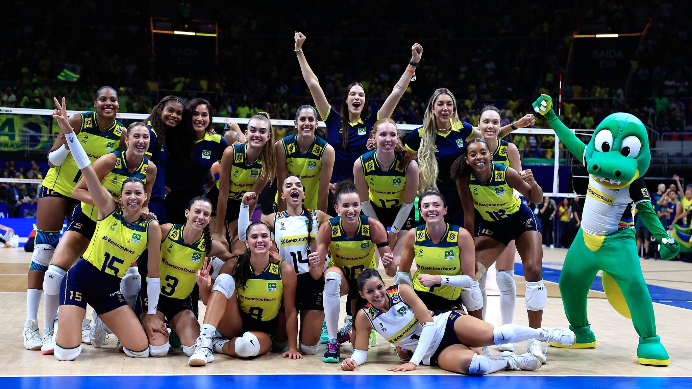

Duda e Ana Patrícia ainda celebram o ouro conquistado nas Olimpíadas de Paris. De volta ao Brasil, as brasileiras terão alguns meses de folga pela frente. Nesse tempo, poderão descansar e reviver os momentos de glória nos Jogos de 2024. Também planejarão os próximos passos da dupla. A cada início de ciclo, é comum que antigas parcerias cheguem ao fim, e novas surjam. Mas as campeãs olímpicas não pretendem saber de mudanças tão cedo.
A parceria entre Duda e Ana Patrícia no vôlei de praia profissional começou depois dos Jogos de Tóquio, em 2021. Mas as duas tinham jogado juntas na base. Foram, inclusive, campeãs das Olimpíadas da Juventude, em 2014.
Consideradas a melhor dupla do mundo, Ana Patrícia e Duda foram perfeitas nas Olimpíadas de Paris e perderam apenas dois sets durante a campanha para conquistar a medalha de ouro olímpica, finalizando a trajetória histórica de uma gigante no esporte.

V√¥lei de quadra femininoü•âüèê
| Jogadoras |
Posção |
| Ana Cristina |
Ponteira |
| Carol |
Central |
| Diana |
Central |
| Thaisa |
Central |
| Gabi |
Ponteira |
| Júlia Bergmann |
Ponteira |
| Lorenne |
Oposta |
| Macris |
Levantadora |
| Nyeme |
Líbero |
Roberta |
Levantadora |
Rosamaria |
Oposta |
Tainara |
Oposta |
| Tabela Olímpica |


O time de vôlei feminino do Brasil teve um ciclo Olímpico de sucesso, ainda que não tenha ganhado nenhum título a nível intercontinental. Na Liga das Nações de Vôlei (VNL) deste ano, o Brasil teve uma campanha perfeita na fase preliminar, vencendo todos os jogos, um feito inédito na competição. Porém, perdeu um jogo acirrado contra o Japão na semifinal e terminou em quarto lugar após nova derrota contra a Polônia.
Na VNL de 2022, o Brasil ficou com a prata ao vencer a Sérvia na semifinal, mas foi derrotada para a Itália na final. Alguns meses depois, no Campeonato Mundial de 2022, disputado nos Países Baixos e na Polônia, o Brasil foi vice-campeão, mas invertendo os resultados: derrotou a Itália na semi e perdeu para a Itália na final. Em 2023, o Brasil caiu nas quartas diante da República Popular da China.
